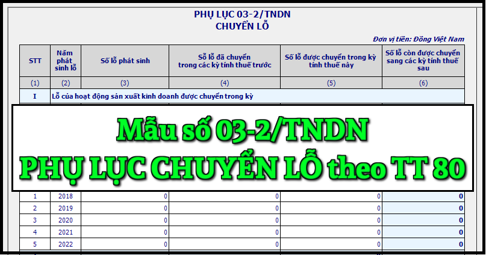

Mẫu Phụ lục chuyển lỗ mới nhất năm 2024 là mẫu số: 03-2/TNDN được ban hành kèm theo Thông tư số 80/2021/TT-BTC. Đây là mẫu phụ lục kèm theo tờ khai quyết toán thuế thu nhập doanh nghiệp số 03/TNDN
|
Phụ lục
CHUYỂN LỖ (Kèm theo tờ khai quyết toán thuế thu nhập doanh nghiệp số 03/TNDN) [01] Kỳ tính thuế:.......
[02] Tên người nộp thuế: ...........................................................................................
[03] Mã số thuế:
Đơn vị tiền: Đồng Việt Nam
Tôi cam đoan số liệu khai trên là đúng và chịu trách nhiệm trước pháp luật về những số liệu đã khai./.
|
||||||||||||||||||||||||||||||||||||||||||||||||||||||||||||||||||||||||||
Cách kê khai Phụ lục chuyển lỗ - mẫu số 03-2/TNDN theo TT 80/2021 như sau:
Chỉ tiêu [01]: NNT ghi rõ kỳ tính thuế năm phù hợp kỳ tính thuế trên tờ khai 03/TNDN.
Chỉ tiêu [02], [03]: NNT ghi tên và mã số thuế của người nộp thuế phù hợp thông tin trên tờ khai 03/TNDN. NNT khai thuế điện tử thì hệ thống Etax tự động hỗ trợ hiển thị thông tin này từ thông tin NNT kê khai trên tờ khai 03/TNDN.
Cột (1): NNT ghi số thứ tự theo từng dòng theo từng mục I, mục II
Cột (2): NNT ghi năm phát sinh lỗ, mỗi năm được ghi vào một dòng theo từng mục I, mục II
Cột (3): NNT ghi tổng số tiền lỗ phát sinh tương ứng với từng năm đã kê khai tại cột (1).
Cột (4): NNT ghi số lỗ đã được chuyển trong các kỳ tính thuế trước của từng năm đã kê khai tại cột (1).
Cột (5): NNT ghi số lỗ được chuyển trong kỳ tính thuế này của từng năm đã kê khai tại cột (1).
Cột (6): NNT ghi số lỗ còn được chuyển sang các kỳ tính thuế sau của từng năm đã kê khai tại cột (1). Số liệu của cột này theo từng năm được xác định như sau: (6) = (3) - (4) - (5)
Chỉ tiêu [04]: NNT ghi tổng số lỗ của hoạt động sản xuất kinh doanh được chuyển trong kỳ tính thuế này, không vượt quá thu nhập chịu thuế (chưa trừ chuyển lỗ) của doanh nghiệp sau khi đã trừ thu nhập miễn thuế trong kỳ. Chỉ tiêu này được ghi vào chỉ tiêu C3a của tờ khai 03/TNDN.
Chỉ tiêu [05]: NNT ghi tổng số lỗ của hoạt động chuyển nhượng bất động sản được chuyển trong kỳ tính thuế này, không vượt quá thu nhập chịu thuế của hoạt động chuyển nhượng bất động sản trong kỳ. Chỉ tiêu này được ghi vào chỉ tiêu D2 của tờ khai 03/TNDN.
